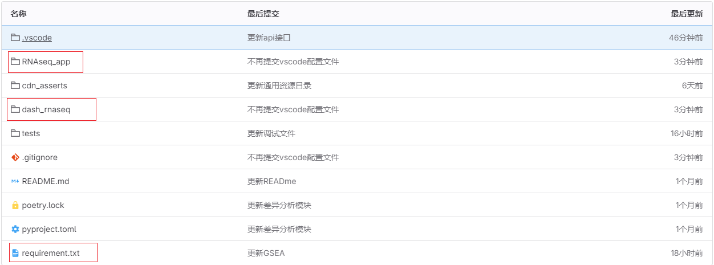
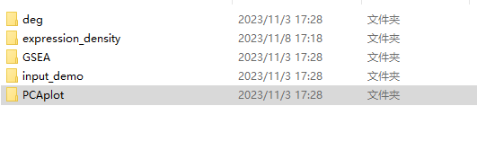
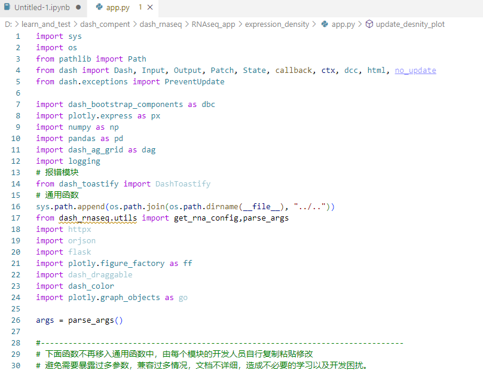
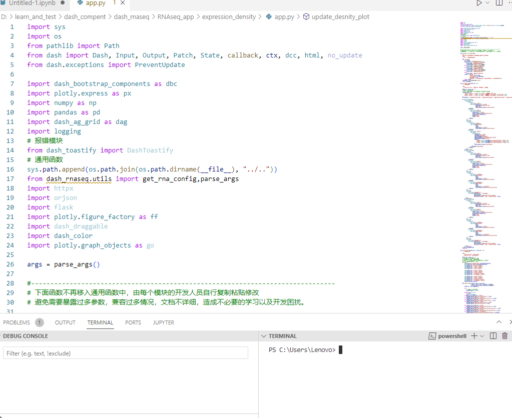
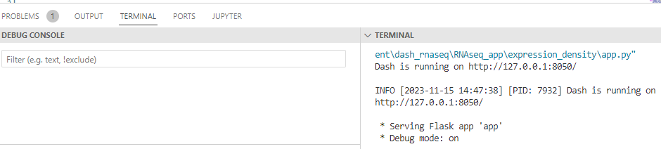
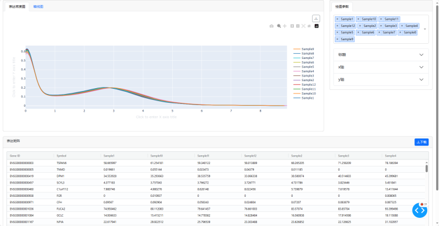

介绍¶
特别说明：
dash 的开发只封装了一些 提交任务 api 接口的功能，没有将所有功能进行深度的封装（过度的封装导致需要暴露过多参数，兼容过多情况，文档不详细，造成不必要的学习以及开发困扰），但是RNAseq平台的大部分功能都可以在 GSEA模块找到示例。
dash 开发¶
dash 项目开发仓库地址：http://10.0.1.111:9527/geneplus-dash/dash_rnaseq
项目目录结构¶
dash_rnaseq 目录下包含一些比较通用的函数。 RNAseq_app 目录下则是各个模块的应用程序.
具体开发¶
1. 目前比较成熟的demo 是GSEA模块，可以拷贝这个模块的目录作为自己开发的基础。先尝试自己理解里面的代码逻辑。
2. 页面布局我们就不赘述了，就按GSEA的代码进行修改。
3. 由于分析参数，绘图参数等我们都需要在后续打开时进行恢复，所以选项这些我们一般放在回调中更新
具体实现可以参考上面代码，上面的代码只会在页面刚加载的时候运行一遍。
get_my_config
可以在初始化的时候获取到每个模块配置文件（config.yaml）的内容。
config.yaml的内容一般如下：
- <pre><code> | input_dir: 项目的输入文件目录，目录下包含三个文件，参考 RNAseq_app/input_demo目录
- task_output_dir: 任务结果的输出目录，这个目录会存放你的分析参数，绘图参数，结果文件，用于下次重新进入此任务时页面可以重新回原task_input_dir: 模块依赖其他模块的输入目录referenceGene: 物种等信息
</code></pre>
4. 绘图参数的回原，参考下面代码块。
绘图参数界面的UI实现参考 accordion_theme 函数。 对应的回调则参考 callback_theme 函数。
5. 分析模块
分析模块基本上只要参考上面的这个代码块，修改下分析代码就可以了。
第一个Output主要用于错误时输出错误信息到页面上。第二个Output用于保存任务id,第三个Output保存配置文件的信息。
6. 表格
表格没什么好讲的，我们使用dash aggrid进行开发，熟悉这个表格的使用就可以了。其他代码块复制粘贴即可
vscode的使用¶
注： 目前并没有一个好的开发环境，让大家直接使用，暂时只能自己部署自己的开发环境。
具体dash开发一条龙步骤¶
1.将dash项目开发所需要的git下载至进行开发的目录下，尽量路径下不要有中文名称
dash 项目开发仓库地址：http://10.0.1.111:9527/geneplus-dash/dash_rnaseq
2.将目录移动至RNAseq_app目录下，并创建以自己模块名称命名的文件夹
3.可以将现有的模块copy过去，再在现有模块的大框加下面进行修改，按照需求实现你自己模块的功能。
建议将assets文件、app.py文件copy过去后进行开发，这两个比较重要
4.用vscode打开app.py即可对dash进行开发
5.按住ctrl+`, 即可打开terminal以及后台。
点击右上角的三角运行按钮，运行成功后terminal会弹出渲染构建过后的dash界面的网址，打开网址就可以看到界面
6.调试过程中修改了app.py，ctrl+s保存后刷新dash生成的界面即可查看修改过后的渲染结果
7.想要在调试过程中查看中间变量和打断点可以查看vscode的断点调试教程